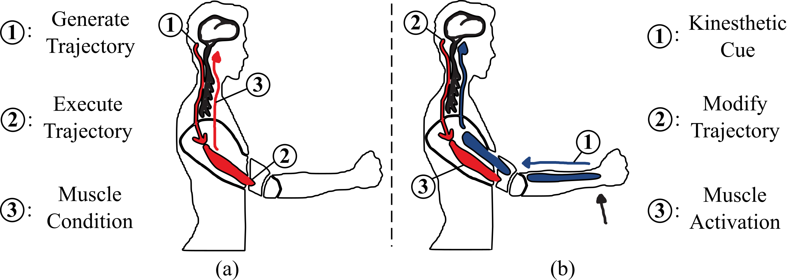

In this page, I introduce my Ph.D. project and its relevant techniques in details.
Joint torque feedback is a new and promising means of kinesthetic feedback for providing information to a person or guiding them during a motion task. However, little work has been done when it comes to applying the torque feedback to a person, such as determining the psychophysical parameters of how well humans can detect external torques or how stiff the torque input should be to augment a human motion without interference with the voluntary movement.
